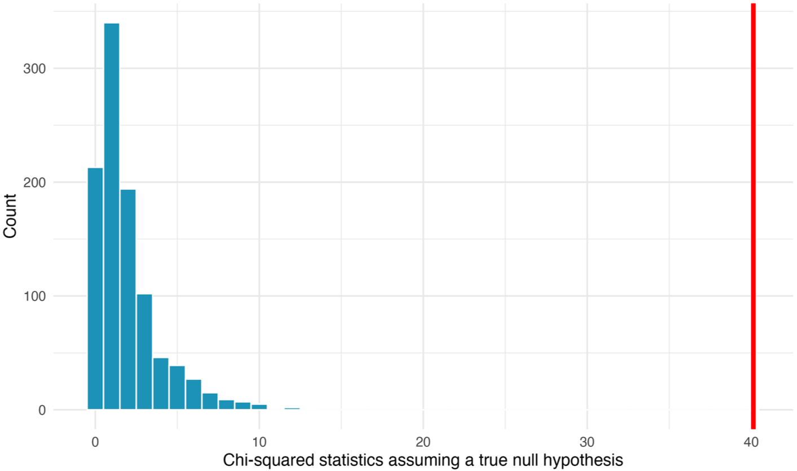

Study: Researchers recruited 219 participants to sell a used iPod that was known to have frozen twice in the past.
The participants were incentivized to get as much money as they could for the iPod since they would receive a 5% cut of the sale.
Unbeknownst to the 219 sellers, the buyers were collaborating with the researchers to evaluate the influence of different questions on the likelihood of getting the sellers to disclose the past issues with the iPod.
The scripted buyers started their interaction by asking one of three questions:
General: What can you tell me about it?
Positive Assumption: It does not have any problems, does it?
Negative Assumption: What problems does it have?
The seller then responds by either:
Disclosing the problem of iPod freezing
Hiding the problem
Research question: Does the wording of a question affect whether sellers disclose that an iPod has a freezing problem?
Study design:
Question type
Disclose
Hide
Total
General
\(a\)
\(d\)
73
Positive assumption
\(b\)
\(e\)
73
Negative assumption
\(c\)
\(f\)
73
Total
\(a+b+c\)
\(d+e+f\)
219
Numbers \(a,b,c,d,e,f\) are the study’s outcomes.
Note about row sums: it must be that \(a+d=b+e=c+f=73\).
Core question (more generally)
Consider two categorical variables, each possibly taking more than two values.
Core: are the two variables independent? Or is there an association?
In Ch 17 (comparing two proportions), we could summarize the data with one difference in proportions. That breaks down when:
the explanatory variable has 3 or more groups
the response variable has 3 or more categories
there is no single obvious “success” category to compare across just two groups
Ch 18 extends hypothesis testing to two-way tables, using the chi-squared statistic and the chi-squared distribution.
iPod example: data
Question type
Disclose
Hide
Total
General
2
71
73
Positive assumption
23
50
73
Negative assumption
36
37
73
Total
61
158
219
The rates look very different across rows, but we still need to ask whether those differences could be due to chance.
Because the study was an experiment, causal language is justified if evidence is strong enough.
Hypotheses for a Two-Way Table
Null hypothesis H_0
The two variables are independent.
Here: the question type does not affect whether sellers disclose the freezing problem.
Alternative hypothesis H_A
The two variables are associated.
Here: disclosure behavior does depend on the question type.
Expected Counts Under Independence
Big idea: If the variables were independent, each row should have about the same column proportions as the overall table.
Hence the expected count for row \(i\) and column \(j\) under independence is:
Worked example: For row 1 / column 1 in the iPod table:
\[
E_{11} = \frac{73 \times 61}{219} = 20.33
\]
So under H_0, we would expect about 20.33 disclosures in the General row.
Expected Count Table
Question type
Disclose expected
Hide expected
Row total
General
20.33
52.67
73
Positive assumption
20.33
52.67
73
Negative assumption
20.33
52.67
73
Total
61
158
219
What to notice
All three rows have the same expected counts because the row totals are all 73.
The observed counts deviate a lot from these expectations.
But we still need a single statistic that summarizes how far the whole table is from independence.
The Chi-Squared Statistic
Sum is over rows (indexed by \(i\)) and columns (indexed by \(j\)) \[\begin{align*}
\chi^2 = \sum_{i,j} \frac{(\text{observed}_{i,j} - \text{expected}_{i,j})^2}{\text{expected}_{i,j}}
= \sum_{i,j} \frac{(O_{i,j} - E_{i,j})^2}{E_{i,j}}
\end{align*}\]
Calculation for iPod example
Observed counts
Question type
Disclose
Hide
Total
General
2
71
73
Positive
23
50
73
Negative
36
37
73
Total
61
158
219
Expected counts
Question type
Disclose
Hide
Total
General
20.33
52.67
73
Positive
20.33
52.67
73
Negative
20.33
52.67
73
Total
61
158
219
Intermediate step: compute summand for each cell
Question type
Disclose
Hide
General
\(\frac{(2-20.33)^2}{20.33}\)
\(\frac{(71-52.67)^2}{52.67}\)
Positive
\(\frac{(23-20.33)^2}{20.33}\)
\(\frac{(50-52.67)^2}{52.67}\)
Negative
\(\frac{(36-20.33)^2}{20.33}\)
\(\frac{(37-52.67)^2}{52.67}\)
Adding up these six fractions, we get statistic value of \[\chi^2 = 40.13.\]
How to interpret “40.13”
General interpretation of chi-squared statistic:
Large values mean the observed table is far from the expected table.
Small values mean the observed and expected counts are relatively close.
What Does “40.13” Mean? By itself, not much.
Just like a difference in proportions needs a null distribution, a chi-squared statistic also needs a benchmark.
The inferential question: If H_0 were true, how often would random chance alone generate a chi-squared statistic at least as large as 40.13? Can answer with
a randomization test
a mathematical model using the chi-squared distribution
Randomization Test of Independence
\(H_0\): Sellers would disclose or hide the problem regardless of question type. Then our randomization procedure will:
keep the 61 disclosures and 158 hidden responses fixed
randomly reassign them to the three question groups
recompute the chi-squared statistic
One randomized table:
Question type
Disclose
Hide
Total
General
29
44
73
Positive assumption
15
58
73
Negative assumption
17
56
73
Total
61
158
219
The chi-squared statistic for this table is [use formula]
Randomization Test: iPod example

A histogram of chi-squared statisics from 1,000 simulations produced under the null hypothesis, where the question is independent of the response. The observed statistic of 40.13 is marked by the red line. None of the 1,000 simulations had a chi-squared value of at least 40.13.
Conclusion from the randomization test: The simulated p-value is essentially 0.
Plain-language interpretation: If question wording truly had no effect, the observed table would be extraordinarily unlikely.
So the data provide very strong evidence against independence.
Randomization Test: Interpretation
It can tell us
whether the two variables appear to be associated
whether the observed departure from independence is too large to attribute to chance alone
It cannot fully tell us
a single directional effect the way a one-number difference in proportions can
which exact cell explains the whole story by itself
whether the association is practically important without context
Mathematical Model: Chi-Squared Distribution
Randomization is conceptually powerful, but a mathematical approximation is often faster and more standardized.
Consider the following conditions:
Independent observations
Large samples: expected count of at least 5 in each cell
When the null hypothesis is true and conditions above are met, the chi-squared statistic follows a chi-squared distribution with \[df = (R - 1)(C - 1)\]degrees of freedom (for a two-way table with \(R\) rows and \(C\) columns)
\(df\) determines shape of the chi-squared distribution
Mathematical Model: iPod example
Conditions: The study used random assignment, and all expected counts exceed 5, so the chi-squared approximation is appropriate.
Degrees of freedom: There are 3 rows and 2 columns, so:
\[
df = (3 - 1)(2 - 1) = 2
\]
With \(\chi^2 = 40.13\) and \(df = 2\), we get p-value
1-pchisq(40.13, df =2)
[1] 1.93144e-09
This p-value is essentially zero (same conclusion as in the randomization test).